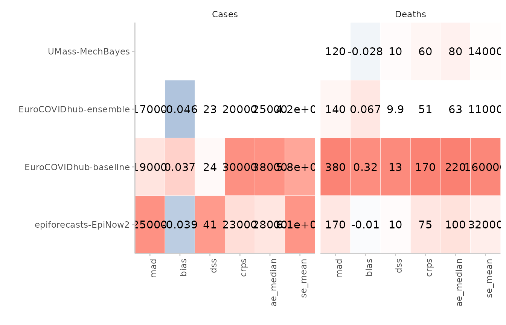
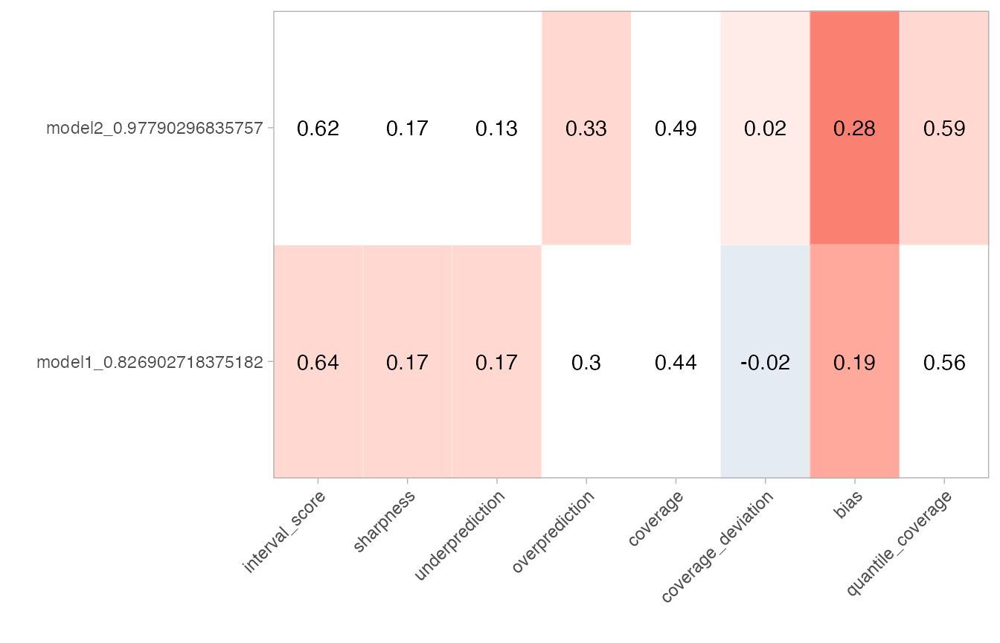
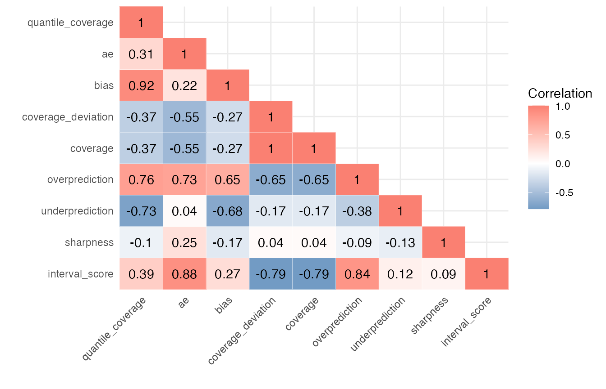
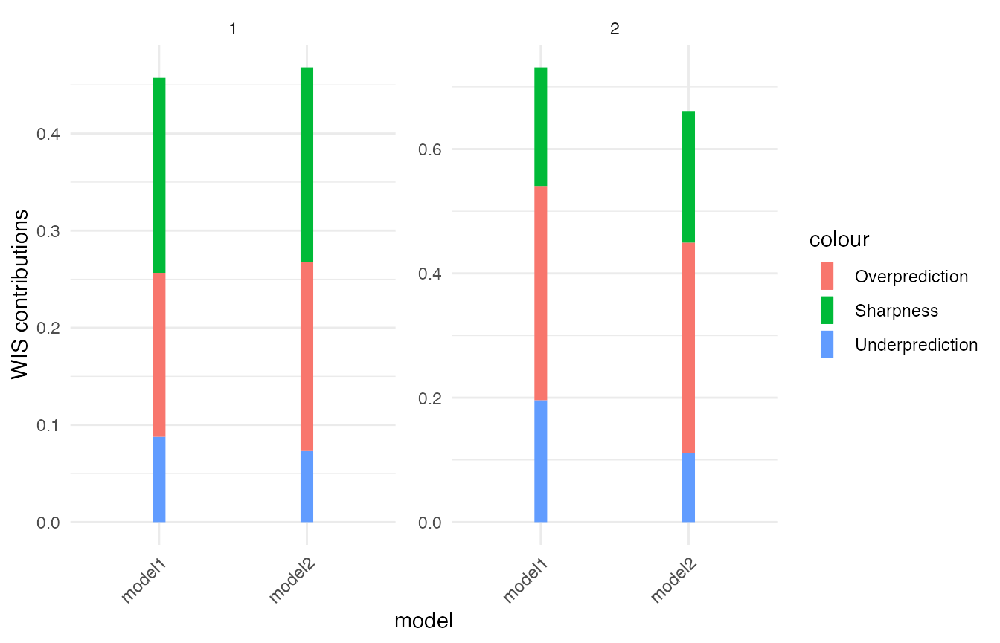
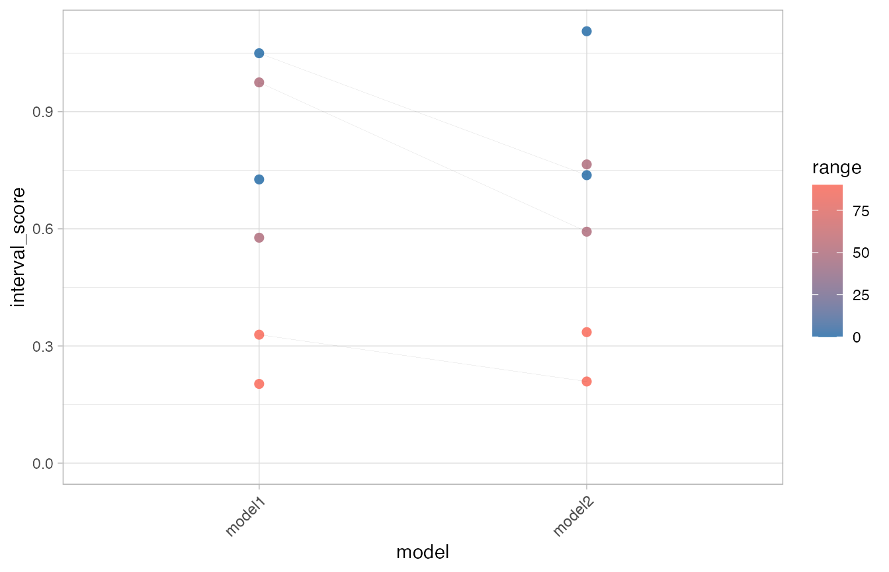
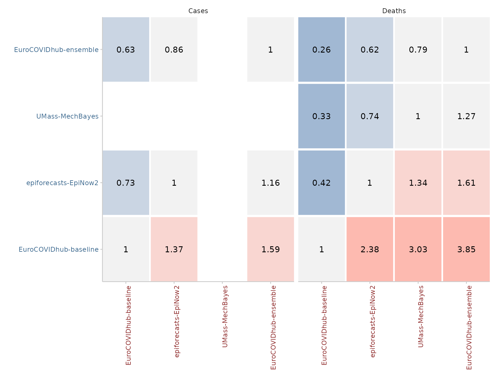
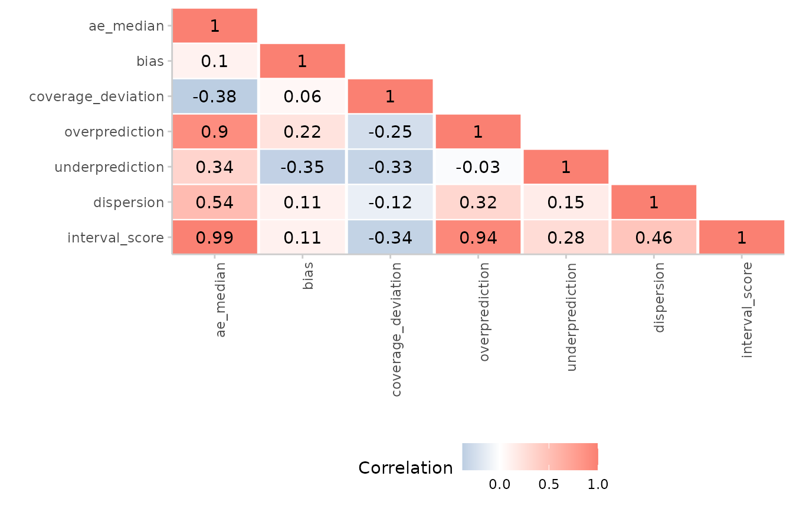
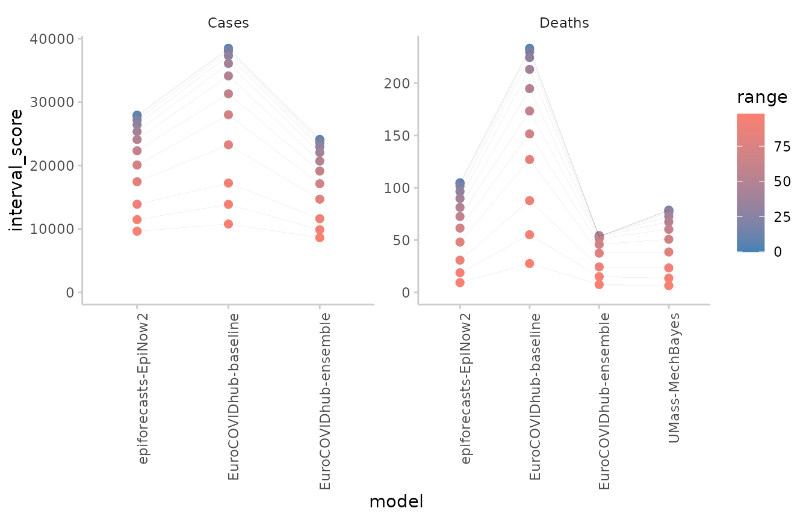

The scoringutils package provides a collection of
metrics and proper scoring rules that make it simple to score
probabilistic forecasts against the true observed values. You can find
more information in the paper Evaluating Forecasts with
scoringutils in R as well as the Metrics-Vignette
and the Scoring
forecasts directly Vignette.
The scoringutils package offers convenient automated
forecast evaluation in a data.table format (using the
function score()), but also provides experienced users with
a set of reliable lower-level scoring metrics operating on
vectors/matriced they can build upon in other applications. In addition
it implements a wide range of flexible plots that are able to cover many
use cases.
The goal of this package is to provide a tested and reliable
collection of metrics that can be used for scoring probabilistic
forecasts (forecasts with a full predictive distribution, rather than
point forecasts). It has a much stronger focus on convenience than
e.g. the scoringRules package, which provides a
comprehensive collection of proper scoring rules (also used in
scoringutils). In contrast to other packages,
scoringutils offers functionality to automatically evaluate
forecasts, to visualise scores and to obtain relative scores between
models.
Predictions can be handled in various formats:
scoringutils can handle probabilistic forecasts in either a
sample based or a quantile based format. For more detail on the expected
input formats please see below. True values can be integer, continuous
or binary.
Input formats
Most of the time, the score() function will be able to
do the entire evaluation for you. All you need to do is to pass in a
data.frame with the appropriate columns. Which columns are
required depends on the format the forecasts come in. The forecast
format can either be based on quantiles (see
example_quantile for the expected format), based on
predictive samples (see example_continuous and
example_integer for the expected format in each case) or in
a binary format. The following table gives an overview (pairwise
comparisons will be explained in more detail below):
| Format | Required columns |
|---|---|
| quantile-based | ‘true_value’, ‘prediction’, ‘quantile’ |
| sample-based | ‘true_value’, ‘prediction’, ‘sample’ |
| binary | ‘true_value’, ‘prediction’ |
| pairwise-comparisons | additionally a column ‘model’ |
Additional columns may be present to indicate a grouping of
forecasts. For example, we could have forecasts made by different models
in various locations at different time points, each for several weeks
into the future. scoringutils automatically tries to
determine the unit of a single forecast, i.e. the combination
of existing columns that are able to uniquely identify a single
forecast. It uses all existing columns for this, which can sometimes
lead to issues. We therefore recommend using the function
set_forecast_unit() to determine the forecast unit
manually. The function simply drops unneeded columns, while making sure
that some necessary, ‘protected columns’ like “prediction” or
“true_value” are retained.
colnames(example_quantile)
#> [1] "location" "target_end_date" "target_type" "true_value"
#> [5] "location_name" "forecast_date" "quantile" "prediction"
#> [9] "model" "horizon"
set_forecast_unit(
example_quantile,
c("location", "target_end_date", "target_type", "horizon", "model")
) %>%
colnames()
#> [1] "true_value" "quantile" "prediction" "location"
#> [5] "target_end_date" "target_type" "horizon" "model"Checking the input data
The function check_forecasts() can be used to check the
input data. It gives a summary of what scoringutils thinks
you are trying to achieve. It infers the type of the prediction target,
the prediction format, and the unit of a single forecasts, gives an
overview of the number of unique values per column (helpful for spotting
missing data) and returns warnings or errors.
head(example_quantile)
#> location target_end_date target_type true_value location_name forecast_date
#> 1: DE 2021-01-02 Cases 127300 Germany <NA>
#> 2: DE 2021-01-02 Deaths 4534 Germany <NA>
#> 3: DE 2021-01-09 Cases 154922 Germany <NA>
#> 4: DE 2021-01-09 Deaths 6117 Germany <NA>
#> 5: DE 2021-01-16 Cases 110183 Germany <NA>
#> 6: DE 2021-01-16 Deaths 5867 Germany <NA>
#> quantile prediction model horizon
#> 1: NA NA <NA> NA
#> 2: NA NA <NA> NA
#> 3: NA NA <NA> NA
#> 4: NA NA <NA> NA
#> 5: NA NA <NA> NA
#> 6: NA NA <NA> NA
check_forecasts(example_quantile)
#> The following messages were produced when checking inputs:
#> 1. 144 values for `prediction` are NA in the data provided and the corresponding rows were removed. This may indicate a problem if unexpected.
#> Your forecasts seem to be for a target of the following type:
#> $target_type
#> [1] "integer"
#>
#> and in the following format:
#> $prediction_type
#> [1] "quantile"
#>
#> The unit of a single forecast is defined by:
#> $forecast_unit
#> [1] "location" "target_end_date" "target_type" "location_name"
#> [5] "forecast_date" "model" "horizon"
#>
#> Cleaned data, rows with NA values in prediction or true_value removed:
#> $cleaned_data
#> location target_end_date target_type true_value location_name
#> 1: DE 2021-05-08 Cases 106987 Germany
#> 2: DE 2021-05-08 Cases 106987 Germany
#> 3: DE 2021-05-08 Cases 106987 Germany
#> 4: DE 2021-05-08 Cases 106987 Germany
#> 5: DE 2021-05-08 Cases 106987 Germany
#> ---
#> 20397: IT 2021-07-24 Deaths 78 Italy
#> 20398: IT 2021-07-24 Deaths 78 Italy
#> 20399: IT 2021-07-24 Deaths 78 Italy
#> 20400: IT 2021-07-24 Deaths 78 Italy
#> 20401: IT 2021-07-24 Deaths 78 Italy
#> forecast_date quantile prediction model horizon
#> 1: 2021-05-03 0.010 82466 EuroCOVIDhub-ensemble 1
#> 2: 2021-05-03 0.025 86669 EuroCOVIDhub-ensemble 1
#> 3: 2021-05-03 0.050 90285 EuroCOVIDhub-ensemble 1
#> 4: 2021-05-03 0.100 95341 EuroCOVIDhub-ensemble 1
#> 5: 2021-05-03 0.150 99171 EuroCOVIDhub-ensemble 1
#> ---
#> 20397: 2021-07-12 0.850 352 epiforecasts-EpiNow2 2
#> 20398: 2021-07-12 0.900 397 epiforecasts-EpiNow2 2
#> 20399: 2021-07-12 0.950 499 epiforecasts-EpiNow2 2
#> 20400: 2021-07-12 0.975 611 epiforecasts-EpiNow2 2
#> 20401: 2021-07-12 0.990 719 epiforecasts-EpiNow2 2
#>
#> Number of unique values per column per model:
#> $unique_values
#> model location target_end_date target_type true_value
#> 1: EuroCOVIDhub-ensemble 4 12 2 96
#> 2: EuroCOVIDhub-baseline 4 12 2 96
#> 3: epiforecasts-EpiNow2 4 12 2 95
#> 4: UMass-MechBayes 4 12 1 48
#> location_name forecast_date quantile prediction horizon
#> 1: 4 11 23 3969 3
#> 2: 4 11 23 3733 3
#> 3: 4 11 23 3903 3
#> 4: 4 11 23 1058 3
#>
#> $messages
#> [1] "144 values for `prediction` are NA in the data provided and the corresponding rows were removed. This may indicate a problem if unexpected."If you are unsure what your input data should look like, have a look
at the example_quantile, example_integer,
example_continuous and example_binary data
sets provided in the package.
The output of check_forecasts() can later be directly
used as input to score() (otherwise, score()
will just run check_forecasts() anyway internally).
Showing available forecasts
The function avail_forecasts() may also be helpful to
determine where forecasts are available. Using the by
argument you can specify the level of summary. For example, to see how
many forecasts there are per model and target_type, we can run
avail_forecasts(example_quantile, by = c("model", "target_type"))
#> The following messages were produced when checking inputs:
#> 1. 144 values for `prediction` are NA in the data provided and the corresponding rows were removed. This may indicate a problem if unexpected.
#> model target_type Number forecasts
#> 1: EuroCOVIDhub-ensemble Cases 128
#> 2: EuroCOVIDhub-baseline Cases 128
#> 3: epiforecasts-EpiNow2 Cases 128
#> 4: EuroCOVIDhub-ensemble Deaths 128
#> 5: EuroCOVIDhub-baseline Deaths 128
#> 6: UMass-MechBayes Deaths 128
#> 7: epiforecasts-EpiNow2 Deaths 119We see that ‘epiforecasts-EpiNow2’ has some missing forecasts for the deaths forecast target and that UMass-MechBayes has no case forecasts.
This information can also be visualised using the
plot_avail_forecasts() function:
example_quantile %>%
avail_forecasts(by = c("model", "forecast_date", "target_type")) %>%
plot_avail_forecasts() +
facet_wrap(~ target_type)
#> The following messages were produced when checking inputs:
#> 1. 144 values for `prediction` are NA in the data provided and the corresponding rows were removed. This may indicate a problem if unexpected.
You can also visualise forecasts directly using the
plot_predictions() function:
example_quantile %>%
make_NA(
what = "truth",
target_end_date >= "2021-07-15",
target_end_date < "2021-05-22"
) %>%
make_NA(
what = "forecast",
model != "EuroCOVIDhub-ensemble",
forecast_date != "2021-06-28"
) %>%
plot_predictions(
x = "target_end_date",
by = c("target_type", "location")
) +
facet_wrap(target_type ~ location, ncol = 4, scales = "free")
Scoring and summarising forecasts
Forecasts can easily be scored using the score()
function.
For clarity, we suggest setting the forecast unit explicitly and you
may also want to call check_forecasts() explicitly.
scores <- example_quantile %>%
set_forecast_unit(
c("location", "target_end_date", "target_type", "location_name",
"forecast_date", "model", "horizon")
) %>%
check_forecasts() %>%
score()
#> The following messages were produced when checking inputs:
#> 1. 144 values for `prediction` are NA in the data provided and the corresponding rows were removed. This may indicate a problem if unexpected.
head(scores)
#> location target_end_date target_type location_name forecast_date
#> 1: DE 2021-05-08 Cases Germany 2021-05-03
#> 2: DE 2021-05-08 Cases Germany 2021-05-03
#> 3: DE 2021-05-08 Cases Germany 2021-05-03
#> 4: DE 2021-05-08 Cases Germany 2021-05-03
#> 5: DE 2021-05-08 Cases Germany 2021-05-03
#> 6: DE 2021-05-08 Cases Germany 2021-05-03
#> model horizon range interval_score dispersion
#> 1: EuroCOVIDhub-baseline 1 0 25620.0 0.0
#> 2: EuroCOVIDhub-baseline 1 10 25599.5 184.5
#> 3: EuroCOVIDhub-baseline 1 10 25599.5 184.5
#> 4: EuroCOVIDhub-baseline 1 20 25481.0 556.0
#> 5: EuroCOVIDhub-baseline 1 20 25481.0 556.0
#> 6: EuroCOVIDhub-baseline 1 30 25270.2 816.2
#> underprediction overprediction coverage coverage_deviation bias quantile
#> 1: 0 25620 0 0.0 0.95 0.50
#> 2: 0 25415 0 -0.1 0.95 0.45
#> 3: 0 25415 0 -0.1 0.95 0.55
#> 4: 0 24925 0 -0.2 0.95 0.40
#> 5: 0 24925 0 -0.2 0.95 0.60
#> 6: 0 24454 0 -0.3 0.95 0.35
#> ae_median quantile_coverage
#> 1: 25620 TRUE
#> 2: 25620 TRUE
#> 3: 25620 TRUE
#> 4: 25620 TRUE
#> 5: 25620 TRUE
#> 6: 25620 TRUENote that in the above example some columns contain duplicated information with regards to the forecast unit, e.g. “location” and “location_name”, and could be dropped.
example_quantile %>%
set_forecast_unit(
c("location", "target_end_date", "target_type",
"forecast_date", "model", "horizon")
) %>%
check_forecasts()
#> The following messages were produced when checking inputs:
#> 1. 144 values for `prediction` are NA in the data provided and the corresponding rows were removed. This may indicate a problem if unexpected.
#> Your forecasts seem to be for a target of the following type:
#> $target_type
#> [1] "integer"
#>
#> and in the following format:
#> $prediction_type
#> [1] "quantile"
#>
#> The unit of a single forecast is defined by:
#> $forecast_unit
#> [1] "location" "target_end_date" "target_type" "forecast_date"
#> [5] "model" "horizon"
#>
#> Cleaned data, rows with NA values in prediction or true_value removed:
#> $cleaned_data
#> true_value quantile prediction location target_end_date target_type
#> 1: 106987 0.010 82466 DE 2021-05-08 Cases
#> 2: 106987 0.025 86669 DE 2021-05-08 Cases
#> 3: 106987 0.050 90285 DE 2021-05-08 Cases
#> 4: 106987 0.100 95341 DE 2021-05-08 Cases
#> 5: 106987 0.150 99171 DE 2021-05-08 Cases
#> ---
#> 20397: 78 0.850 352 IT 2021-07-24 Deaths
#> 20398: 78 0.900 397 IT 2021-07-24 Deaths
#> 20399: 78 0.950 499 IT 2021-07-24 Deaths
#> 20400: 78 0.975 611 IT 2021-07-24 Deaths
#> 20401: 78 0.990 719 IT 2021-07-24 Deaths
#> forecast_date model horizon
#> 1: 2021-05-03 EuroCOVIDhub-ensemble 1
#> 2: 2021-05-03 EuroCOVIDhub-ensemble 1
#> 3: 2021-05-03 EuroCOVIDhub-ensemble 1
#> 4: 2021-05-03 EuroCOVIDhub-ensemble 1
#> 5: 2021-05-03 EuroCOVIDhub-ensemble 1
#> ---
#> 20397: 2021-07-12 epiforecasts-EpiNow2 2
#> 20398: 2021-07-12 epiforecasts-EpiNow2 2
#> 20399: 2021-07-12 epiforecasts-EpiNow2 2
#> 20400: 2021-07-12 epiforecasts-EpiNow2 2
#> 20401: 2021-07-12 epiforecasts-EpiNow2 2
#>
#> Number of unique values per column per model:
#> $unique_values
#> model true_value quantile prediction location
#> 1: EuroCOVIDhub-ensemble 96 23 3969 4
#> 2: EuroCOVIDhub-baseline 96 23 3733 4
#> 3: epiforecasts-EpiNow2 95 23 3903 4
#> 4: UMass-MechBayes 48 23 1058 4
#> target_end_date target_type forecast_date horizon
#> 1: 12 2 11 3
#> 2: 12 2 11 3
#> 3: 12 2 11 3
#> 4: 12 1 11 3
#>
#> $messages
#> [1] "144 values for `prediction` are NA in the data provided and the corresponding rows were removed. This may indicate a problem if unexpected."If we drop essential information, for example, the “target_type” column, we’ll get an error informing us that the forecasts aren’t uniquely identified any more.
example_quantile %>%
set_forecast_unit(
c("location", "target_end_date",
"forecast_date", "model", "horizon")
) %>%
check_forecasts()
#> The following messages were produced when checking inputs:
#> 1. 144 values for `prediction` are NA in the data provided and the corresponding rows were removed. This may indicate a problem if unexpected.
#> Warning in check_forecasts(.): The following warnings were produced when checking inputs:
#> 1. Some forecasts have different numbers of rows
#> 2. (e.g. quantiles or samples).
#> 3. scoringutils found:
#> 4. 46, 23
#> 5. . This may be a problem (it can potentially distort scores,
#> 6. making it more difficult to compare them),
#> 7. so make sure this is intended.
#> Error in check_forecasts(.): The following errors were produced when checking inputs:
#> 1. There are instances with more than one forecast for the same target. This can't be right and needs to be resolved. Maybe you need to check the unit of a single forecast and add missing columns? Use the function find_duplicates() to identify duplicate rows.The function find_duplicates() may help to investigate
the issue. When filtering for only median forecasts of the
EuroCOVIDhub-ensemble, we can see that there are indeed two forecasts
for every date, location and horizon.
duplicates <- example_quantile %>%
set_forecast_unit(
c("location", "target_end_date",
"forecast_date", "model", "horizon")
) %>%
find_duplicates()
duplicates[quantile == 0.5 & model == "EuroCOVIDhub-ensemble", ] %>%
head()
#> true_value quantile prediction location target_end_date forecast_date
#> 1: 106987 0.5 119258 DE 2021-05-08 2021-05-03
#> 2: 1582 0.5 1568 DE 2021-05-08 2021-05-03
#> 3: 64985 0.5 110716 DE 2021-05-15 2021-05-03
#> 4: 64985 0.5 92649 DE 2021-05-15 2021-05-10
#> 5: 1311 0.5 1521 DE 2021-05-15 2021-05-03
#> 6: 1311 0.5 1422 DE 2021-05-15 2021-05-10
#> model horizon
#> 1: EuroCOVIDhub-ensemble 1
#> 2: EuroCOVIDhub-ensemble 1
#> 3: EuroCOVIDhub-ensemble 2
#> 4: EuroCOVIDhub-ensemble 1
#> 5: EuroCOVIDhub-ensemble 2
#> 6: EuroCOVIDhub-ensemble 1The function score() returns unsumarised scores, which
in most cases is not what the user wants. It returns a single score per
forecast (as determined by the forecast unit). For forecasts in a
quantile format, it returns one score per quantile.
A second function, summarise_scores() takes care of
summarising these scores to the level specified by the user. The
by argument can be used to define the level of summary. By
default, by = NULL and the summary unit is assumed to be
the same as the unit of a single forecast. For continuous forecasts,
this means that nothing happens if by isn’t specified.
scores <- score(example_continuous)
#> The following messages were produced when checking inputs:
#> 1. 144 values for `prediction` are NA in the data provided and the corresponding rows were removed. This may indicate a problem if unexpected.
all(scores == summarise_scores(scores), na.rm = TRUE)
#> [1] TRUEFor quantile based forecasts, if by = NULL, then scores
are summarised across quantiles and instead of one score per
forecast_unit and quantile we only get one score per forecast unit.
scores <- example_quantile %>%
set_forecast_unit(
c("location", "target_end_date", "target_type",
"forecast_date", "model", "horizon")
) %>%
check_forecasts() %>%
score()
#> The following messages were produced when checking inputs:
#> 1. 144 values for `prediction` are NA in the data provided and the corresponding rows were removed. This may indicate a problem if unexpected.
head(scores)
#> location target_end_date target_type forecast_date model
#> 1: DE 2021-05-08 Cases 2021-05-03 EuroCOVIDhub-baseline
#> 2: DE 2021-05-08 Cases 2021-05-03 EuroCOVIDhub-baseline
#> 3: DE 2021-05-08 Cases 2021-05-03 EuroCOVIDhub-baseline
#> 4: DE 2021-05-08 Cases 2021-05-03 EuroCOVIDhub-baseline
#> 5: DE 2021-05-08 Cases 2021-05-03 EuroCOVIDhub-baseline
#> 6: DE 2021-05-08 Cases 2021-05-03 EuroCOVIDhub-baseline
#> horizon range interval_score dispersion underprediction overprediction
#> 1: 1 0 25620.0 0.0 0 25620
#> 2: 1 10 25599.5 184.5 0 25415
#> 3: 1 10 25599.5 184.5 0 25415
#> 4: 1 20 25481.0 556.0 0 24925
#> 5: 1 20 25481.0 556.0 0 24925
#> 6: 1 30 25270.2 816.2 0 24454
#> coverage coverage_deviation bias quantile ae_median quantile_coverage
#> 1: 0 0.0 0.95 0.50 25620 TRUE
#> 2: 0 -0.1 0.95 0.45 25620 TRUE
#> 3: 0 -0.1 0.95 0.55 25620 TRUE
#> 4: 0 -0.2 0.95 0.40 25620 TRUE
#> 5: 0 -0.2 0.95 0.60 25620 TRUE
#> 6: 0 -0.3 0.95 0.35 25620 TRUE
scores %>%
summarise_scores() %>%
head()
#> location target_end_date target_type forecast_date model
#> 1: DE 2021-05-08 Cases 2021-05-03 EuroCOVIDhub-baseline
#> 2: DE 2021-05-08 Cases 2021-05-03 EuroCOVIDhub-ensemble
#> 3: DE 2021-05-08 Cases 2021-05-03 epiforecasts-EpiNow2
#> 4: DE 2021-05-08 Deaths 2021-05-03 EuroCOVIDhub-baseline
#> 5: DE 2021-05-08 Deaths 2021-05-03 EuroCOVIDhub-ensemble
#> 6: DE 2021-05-08 Deaths 2021-05-03 UMass-MechBayes
#> horizon interval_score dispersion underprediction overprediction
#> 1: 1 16925.04696 1649.22087 0.0000000 15275.826087
#> 2: 1 7990.85478 5440.98522 0.0000000 2549.869565
#> 3: 1 25395.96087 8173.70000 0.0000000 17222.260870
#> 4: 1 46.79304 44.66261 0.0000000 2.130435
#> 5: 1 53.88000 53.27130 0.6086957 0.000000
#> 6: 1 116.12174 77.07826 39.0434783 0.000000
#> coverage_deviation bias ae_median
#> 1: -0.38521739 0.95 25620
#> 2: 0.04956522 0.50 12271
#> 3: -0.29826087 0.90 44192
#> 4: 0.22347826 0.30 15
#> 5: 0.39739130 -0.10 14
#> 6: 0.04956522 -0.50 208Through the by argument we can specify what unit of
summary we want. We can also call sumarise_scores()
multiple tines, e.g to round your outputs by specifying
e.g. signif() as a summary function.
scores %>%
summarise_scores(by = c("model", "target_type")) %>%
summarise_scores(fun = signif, digits = 2) %>%
kable()| model | target_type | interval_score | dispersion | underprediction | overprediction | coverage_deviation | bias | ae_median |
|---|---|---|---|---|---|---|---|---|
| EuroCOVIDhub-baseline | Cases | 28000 | 4100 | 10000.0 | 14000.0 | -0.110 | 0.0980 | 38000 |
| EuroCOVIDhub-ensemble | Cases | 18000 | 3700 | 4200.0 | 10000.0 | -0.098 | -0.0560 | 24000 |
| epiforecasts-EpiNow2 | Cases | 21000 | 5700 | 3300.0 | 12000.0 | -0.067 | -0.0790 | 28000 |
| EuroCOVIDhub-baseline | Deaths | 160 | 91 | 2.1 | 66.0 | 0.120 | 0.3400 | 230 |
| EuroCOVIDhub-ensemble | Deaths | 41 | 30 | 4.1 | 7.1 | 0.200 | 0.0730 | 53 |
| UMass-MechBayes | Deaths | 53 | 27 | 17.0 | 9.0 | -0.023 | -0.0220 | 78 |
| epiforecasts-EpiNow2 | Deaths | 67 | 32 | 16.0 | 19.0 | -0.043 | -0.0051 | 100 |
Scoring point forecasts
Point forecasts can be scored by making use of the quantile-based
format, but with a value of NA or "point" in
the quantile column. Point forecasts can be scored alongside other
quantile-based forecasts. As point forecasts will have values of
NA for metrics designed for probabilistic forecasts, it is
important to use na.rm = TRUE when summarising.
suppressMessages(score(example_point)) %>%
summarise_scores(by = "model", na.rm = TRUE)
#> model interval_score dispersion underprediction
#> 1: EuroCOVIDhub-baseline 14092.7647 2192.26967 4996.92898
#> 2: EuroCOVIDhub-ensemble 8852.4196 1930.80064 2005.56357
#> 3: epiforecasts-EpiNow2 10659.5125 3084.85850 1604.96135
#> 4: UMass-MechBayes 51.4781 28.09387 15.32315
#> overprediction coverage_deviation bias ae_point se_point
#> 1: 6903.56605 0.002102273 0.21851562 19353.42969 2.883446e+09
#> 2: 4916.05540 0.050752841 0.00812500 12077.10156 1.945118e+09
#> 3: 5969.69268 -0.057861612 -0.04376518 14521.10526 2.680928e+09
#> 4: 8.06108 -0.024886364 -0.02312500 78.47656 1.170976e+04
#> ae_median
#> 1: NaN
#> 2: NaN
#> 3: NaN
#> 4: NaNAdding empirical coverage
For quantile-based forecasts we are often interested in specific
coverage-levels, for example, what percentage of true values fell
between all 50% or the 90% prediction intervals. We can add this
information using the function add_coverage(). This
function also requires a by argument which defines the
level of grouping for which the percentage of true values covered by
certain prediction intervals is computed.
score(example_quantile) %>%
add_coverage(ranges = c(50, 90), by = c("model", "target_type")) %>%
summarise_scores(by = c("model", "target_type")) %>%
summarise_scores(fun = signif, digits = 2)
#> The following messages were produced when checking inputs:
#> 1. 144 values for `prediction` are NA in the data provided and the corresponding rows were removed. This may indicate a problem if unexpected.
#> model target_type interval_score dispersion underprediction
#> 1: EuroCOVIDhub-baseline Cases 28000 4100 10000.0
#> 2: EuroCOVIDhub-baseline Deaths 160 91 2.1
#> 3: EuroCOVIDhub-ensemble Cases 18000 3700 4200.0
#> 4: EuroCOVIDhub-ensemble Deaths 41 30 4.1
#> 5: UMass-MechBayes Deaths 53 27 17.0
#> 6: epiforecasts-EpiNow2 Cases 21000 5700 3300.0
#> 7: epiforecasts-EpiNow2 Deaths 67 32 16.0
#> overprediction coverage_deviation bias ae_median coverage_50 coverage_90
#> 1: 14000.0 -0.110 0.0980 38000 0.33 0.82
#> 2: 66.0 0.120 0.3400 230 0.66 1.00
#> 3: 10000.0 -0.098 -0.0560 24000 0.39 0.80
#> 4: 7.1 0.200 0.0730 53 0.88 1.00
#> 5: 9.0 -0.023 -0.0220 78 0.46 0.88
#> 6: 12000.0 -0.067 -0.0790 28000 0.47 0.79
#> 7: 19.0 -0.043 -0.0051 100 0.42 0.91Adding relative scores
In order to better compare models against each other we can use
relative scores which are computed based on pairwise comparisons (see
details below). Relative scores can be added to the evaluation using the
function summarise_scores(). This requires a column called
‘model’ to be present. Pairwise comparisons are computed according to
the grouping specified in by: essentially, the data.frame
with all scores gets split into different data.frames according to the
values specified in by and relative scores are computed for
every individual group separately. The baseline argument
allows us to specify a baseline that can be used to scale relative
scores (all scores are divided by the baseline relative score). For
example, to obtain relative scores separately for different forecast
targets, we can run
score(example_quantile) %>%
summarise_scores(by = c("model", "target_type"),
relative_skill = TRUE,
baseline = "EuroCOVIDhub-ensemble")
#> The following messages were produced when checking inputs:
#> 1. 144 values for `prediction` are NA in the data provided and the corresponding rows were removed. This may indicate a problem if unexpected.
#> model target_type interval_score dispersion underprediction
#> 1: EuroCOVIDhub-baseline Cases 28483.57465 4102.50094 10284.972826
#> 2: EuroCOVIDhub-baseline Deaths 159.40387 91.40625 2.098505
#> 3: EuroCOVIDhub-ensemble Cases 17943.82383 3663.52458 4237.177310
#> 4: EuroCOVIDhub-ensemble Deaths 41.42249 30.18099 4.103261
#> 5: UMass-MechBayes Deaths 52.65195 26.87239 16.800951
#> 6: epiforecasts-EpiNow2 Cases 20831.55662 5664.37795 3260.355639
#> 7: epiforecasts-EpiNow2 Deaths 66.64282 31.85692 15.893314
#> overprediction coverage_deviation bias ae_median relative_skill
#> 1: 14096.100883 -0.11211957 0.09796875 38473.60156 1.2947445
#> 2: 65.899117 0.11614130 0.33906250 233.25781 2.2958723
#> 3: 10043.121943 -0.09785326 -0.05640625 24101.07031 0.8156514
#> 4: 7.138247 0.19528533 0.07265625 53.13281 0.5966310
#> 5: 8.978601 -0.02312500 -0.02234375 78.47656 0.7475873
#> 6: 11906.823030 -0.06660326 -0.07890625 27923.81250 0.9469157
#> 7: 18.892583 -0.04287176 -0.00512605 104.74790 0.9765276
#> scaled_rel_skill
#> 1: 1.587375
#> 2: 3.848060
#> 3: 1.000000
#> 4: 1.000000
#> 5: 1.253014
#> 6: 1.160932
#> 7: 1.636736Visualising scores
Coloured table
A simple coloured table can be produced based on the scores:
score(example_integer) %>%
summarise_scores(by = c("model", "target_type"), na.rm = TRUE) %>%
summarise_scores(fun = signif, digits = 2) %>%
plot_score_table(by = "target_type") +
facet_wrap(~ target_type, nrow = 1)
#> The following messages were produced when checking inputs:
#> 1. 144 values for `prediction` are NA in the data provided and the corresponding rows were removed. This may indicate a problem if unexpected.
Score heatmap
We can also summarise one particular metric across different categories using a simple heatmap:
score(example_continuous) %>%
summarise_scores(by = c("model", "location", "target_type")) %>%
plot_heatmap(x = "location", metric = "bias") +
facet_wrap(~ target_type)
#> The following messages were produced when checking inputs:
#> 1. 144 values for `prediction` are NA in the data provided and the corresponding rows were removed. This may indicate a problem if unexpected.
Weighted interval score components
The weighted interval score can be split up into three components: Over-prediction, under-prediction and dispersion. These can be visualised separately in the following way:
score(example_quantile) %>%
summarise_scores(by = c("target_type", "model")) %>%
plot_wis() +
facet_wrap(~ target_type, scales = "free")
#> The following messages were produced when checking inputs:
#> 1. 144 values for `prediction` are NA in the data provided and the corresponding rows were removed. This may indicate a problem if unexpected.
Calibration
Calibration is a measure statistical consistency between the forecasts and the observed values. The most common way of assessing calibration (more precisely: probabilistic calibration) are PIT histograms. The probability integral transform (PIT) is equal to the cumulative distribution function of a forecast evaluated at the true observed value. Ideally, pit values should be uniformly distributed after the transformation.
We can compute pit values as such:
example_continuous %>%
pit(by = "model")
#> The following messages were produced when checking inputs:
#> 1. 144 values for `prediction` are NA in the data provided and the corresponding rows were removed. This may indicate a problem if unexpected.
#> model pit_value
#> 1: EuroCOVIDhub-baseline 0.025
#> 2: EuroCOVIDhub-baseline 0.525
#> 3: EuroCOVIDhub-baseline 0.000
#> 4: EuroCOVIDhub-baseline 0.000
#> 5: EuroCOVIDhub-baseline 0.200
#> ---
#> 883: UMass-MechBayes 0.950
#> 884: UMass-MechBayes 0.500
#> 885: UMass-MechBayes 0.100
#> 886: UMass-MechBayes 0.450
#> 887: UMass-MechBayes 0.100And visualise the results as such:
example_continuous %>%
pit(by = c("model", "target_type")) %>%
plot_pit() +
facet_grid(model ~ target_type)
#> The following messages were produced when checking inputs:
#> 1. 144 values for `prediction` are NA in the data provided and the corresponding rows were removed. This may indicate a problem if unexpected.
Similarly for quantile-based forecasts:
example_quantile[quantile %in% seq(0.1, 0.9, 0.1), ] %>%
pit(by = c("model", "target_type")) %>%
plot_pit() +
facet_grid(model ~ target_type)
Another way to look at calibration are interval coverage and quantile coverage. Interval coverage is the percentage of true values that fall inside a given central prediction interval. Quantile coverage is the percentage of observed values that fall below a given quantile level.
In order to plot interval coverage, you need to include “range” in
the by argument to summarise_scores(). The
green area on the plot marks conservative behaviour, i.e. your empirical
coverage is greater than it nominally need be (e.g. 55% of true values
covered by all 50% central prediction intervals.)
example_quantile %>%
score() %>%
summarise_scores(by = c("model", "range")) %>%
plot_interval_coverage()
#> The following messages were produced when checking inputs:
#> 1. 144 values for `prediction` are NA in the data provided and the corresponding rows were removed. This may indicate a problem if unexpected.
To visualise quantile coverage, you need to include “quantile” in
by. Again, the green area corresponds to conservative
forecasts, where central prediction intervals would cover more than
needed.
example_quantile %>%
score() %>%
summarise_scores(by = c("model", "quantile")) %>%
plot_quantile_coverage()
#> The following messages were produced when checking inputs:
#> 1. 144 values for `prediction` are NA in the data provided and the corresponding rows were removed. This may indicate a problem if unexpected.
Pairwise comparisons
Relative scores for different models can be computed using pairwise comparisons, a sort of pairwise tournament where all combinations of two models are compared against each other based on the overlapping set of available forecasts common to both models. Internally, a ratio of the mean scores of both models is computed. The relative score of a model is then the geometric mean of all mean score ratios which involve that model. When a baseline is provided, then that baseline is excluded from the relative scores for individual models (which therefore differ slightly from relative scores without a baseline) and all relative scores are scaled by (i.e. divided by) the relative score of the baseline model.
In scoringutils, pairwise comparisons can be made in two
ways: Through the standalone function pairwise_comparison()
or from within summarise_scores() which simply adds
relative scores to an existing set of scores.
example_quantile %>%
score() %>%
pairwise_comparison(by = "model", baseline = "EuroCOVIDhub-baseline")
#> The following messages were produced when checking inputs:
#> 1. 144 values for `prediction` are NA in the data provided and the corresponding rows were removed. This may indicate a problem if unexpected.
#> model compare_against mean_scores_ratio pval
#> 1: EuroCOVIDhub-baseline epiforecasts-EpiNow2 1.3703452 9.164893e-18
#> 2: EuroCOVIDhub-baseline EuroCOVIDhub-ensemble 1.5925819 2.608666e-32
#> 3: EuroCOVIDhub-baseline UMass-MechBayes 3.0275019 2.627464e-20
#> 4: EuroCOVIDhub-baseline EuroCOVIDhub-baseline 1.0000000 1.000000e+00
#> 5: EuroCOVIDhub-ensemble UMass-MechBayes 0.7867229 1.244731e-04
#> 6: EuroCOVIDhub-ensemble epiforecasts-EpiNow2 0.8606607 1.881520e-02
#> 7: EuroCOVIDhub-ensemble EuroCOVIDhub-baseline 0.6279112 2.608666e-32
#> 8: EuroCOVIDhub-ensemble EuroCOVIDhub-ensemble 1.0000000 1.000000e+00
#> 9: UMass-MechBayes EuroCOVIDhub-ensemble 1.2710955 1.244731e-04
#> 10: UMass-MechBayes epiforecasts-EpiNow2 0.7439673 7.253878e-03
#> 11: UMass-MechBayes EuroCOVIDhub-baseline 0.3303053 2.627464e-20
#> 12: UMass-MechBayes UMass-MechBayes 1.0000000 1.000000e+00
#> 13: epiforecasts-EpiNow2 UMass-MechBayes 1.3441452 7.253878e-03
#> 14: epiforecasts-EpiNow2 EuroCOVIDhub-ensemble 1.1618981 1.881520e-02
#> 15: epiforecasts-EpiNow2 EuroCOVIDhub-baseline 0.7297431 9.164893e-18
#> 16: epiforecasts-EpiNow2 epiforecasts-EpiNow2 1.0000000 1.000000e+00
#> adj_pval relative_skill scaled_rel_skill
#> 1: 3.665957e-17 1.6032604 1.0000000
#> 2: 1.565200e-31 1.6032604 1.0000000
#> 3: 1.313732e-19 1.6032604 1.0000000
#> 4: 1.000000e+00 1.6032604 1.0000000
#> 5: 3.734192e-04 0.8074916 0.5036559
#> 6: 1.881520e-02 0.8074916 0.5036559
#> 7: 1.565200e-31 0.8074916 0.5036559
#> 8: 1.000000e+00 0.8074916 0.5036559
#> 9: 3.734192e-04 0.7475873 0.4662919
#> 10: 1.450776e-02 0.7475873 0.4662919
#> 11: 1.313732e-19 0.7475873 0.4662919
#> 12: 1.000000e+00 0.7475873 0.4662919
#> 13: 1.450776e-02 1.0332277 0.6444541
#> 14: 1.881520e-02 1.0332277 0.6444541
#> 15: 3.665957e-17 1.0332277 0.6444541
#> 16: 1.000000e+00 1.0332277 0.6444541
example_quantile %>%
score() %>%
summarise_scores(
by = "model", relative_skill = TRUE, baseline = "EuroCOVIDhub-baseline"
)
#> The following messages were produced when checking inputs:
#> 1. 144 values for `prediction` are NA in the data provided and the corresponding rows were removed. This may indicate a problem if unexpected.
#> model interval_score dispersion underprediction
#> 1: EuroCOVIDhub-baseline 14321.48926 2096.95360 5143.53567
#> 2: EuroCOVIDhub-ensemble 8992.62316 1846.85278 2120.64029
#> 3: UMass-MechBayes 52.65195 26.87239 16.80095
#> 4: epiforecasts-EpiNow2 10827.40786 2950.73422 1697.23411
#> overprediction coverage_deviation bias ae_median relative_skill
#> 1: 7081.000000 0.00201087 0.21851562 19353.42969 1.6032604
#> 2: 5025.130095 0.04871603 0.00812500 12077.10156 0.8074916
#> 3: 8.978601 -0.02312500 -0.02234375 78.47656 0.7475873
#> 4: 6179.439535 -0.05516986 -0.04336032 14521.10526 1.0332277
#> scaled_rel_skill
#> 1: 1.0000000
#> 2: 0.5036559
#> 3: 0.4662919
#> 4: 0.6444541If using the pairwise_comparison() function, we can also
visualise pairwise comparisons by showing the mean score ratios between
models. By default, smaller values are better and the model we care
about is showing on the y axis on the left, while the model against it
is compared is shown on the x-axis on the bottom. In the example above,
the EuroCOVIDhub-ensemble performs best (it only has values smaller 1),
while the EuroCOVIDhub-baseline performs worst (and only has values
larger than 1). For cases, the UMass-MechBayes model is of course
excluded as there are no case forecasts available and therefore the set
of overlapping forecasts is empty.
example_quantile %>%
score() %>%
pairwise_comparison(by = c("model", "target_type")) %>%
plot_pairwise_comparison() +
facet_wrap(~ target_type)
#> The following messages were produced when checking inputs:
#> 1. 144 values for `prediction` are NA in the data provided and the corresponding rows were removed. This may indicate a problem if unexpected.
Additional analyses and visualisations
Correlation between scores
It may sometimes be interesting to see how different scores correlate
with each other. We can examine this using the function
correlation(). When dealing with quantile-based forecasts,
it is important to call summarise_scorees() before
correlation() to summarise over quantiles before computing
correlations.
example_quantile %>%
score() %>%
summarise_scores() %>%
correlation()
#> The following messages were produced when checking inputs:
#> 1. 144 values for `prediction` are NA in the data provided and the corresponding rows were removed. This may indicate a problem if unexpected.
#> interval_score dispersion underprediction overprediction coverage_deviation
#> 1: 1.00 0.46 0.28 0.94 -0.34
#> 2: 0.46 1.00 0.15 0.32 -0.12
#> 3: 0.28 0.15 1.00 -0.03 -0.33
#> 4: 0.94 0.32 -0.03 1.00 -0.25
#> 5: -0.34 -0.12 -0.33 -0.25 1.00
#> 6: 0.11 0.11 -0.35 0.22 0.06
#> 7: 0.99 0.54 0.34 0.90 -0.38
#> bias ae_median metric
#> 1: 0.11 0.99 interval_score
#> 2: 0.11 0.54 dispersion
#> 3: -0.35 0.34 underprediction
#> 4: 0.22 0.90 overprediction
#> 5: 0.06 -0.38 coverage_deviation
#> 6: 1.00 0.10 bias
#> 7: 0.10 1.00 ae_medianVisualising correlations:
example_quantile %>%
score() %>%
summarise_scores() %>%
correlation() %>%
plot_correlation()
#> The following messages were produced when checking inputs:
#> 1. 144 values for `prediction` are NA in the data provided and the corresponding rows were removed. This may indicate a problem if unexpected.
Scores by interval ranges
If you would like to see how different forecast interval ranges contribute to average scores, you can visualise scores by interval range:
example_quantile %>%
score() %>%
summarise_scores(by = c("model", "range", "target_type")) %>%
plot_ranges() +
facet_wrap(~ target_type, scales = "free")
#> The following messages were produced when checking inputs:
#> 1. 144 values for `prediction` are NA in the data provided and the corresponding rows were removed. This may indicate a problem if unexpected.
Converting to quantile-based forecasts
Different metrics are available for different forecasting formats. In some cases, you may for example have forecasts in a sample-based format, but wish to make use of some of the functionality only available to quantile-based forecasts. For example, you may want to use the decomposition of the weighted interval score, or may like to compute interval coverage values.
You can convert your sample-based forecasts into a quantile-based
format using the function sample_to_quantile(). There is,
however, one caveat: Quantiles will be calculated based on the
predictive samples, which may introduce a bias if the number of
available samples is small.
example_integer %>%
sample_to_quantile(
quantiles = c(0.01, 0.025, seq(0.05, 0.95, 0.05), 0.975, 0.99)
) %>%
score() %>%
add_coverage(by = c("model", "target_type"))
#> The following messages were produced when checking inputs:
#> 1. 3312 values for `prediction` are NA in the data provided and the corresponding rows were removed. This may indicate a problem if unexpected.
#> model target_type location location_name target_end_date
#> 1: EuroCOVIDhub-baseline Cases DE Germany 2021-05-08
#> 2: EuroCOVIDhub-baseline Cases DE Germany 2021-05-08
#> 3: EuroCOVIDhub-baseline Cases DE Germany 2021-05-08
#> 4: EuroCOVIDhub-baseline Cases DE Germany 2021-05-08
#> 5: EuroCOVIDhub-baseline Cases DE Germany 2021-05-08
#> ---
#> 20397: epiforecasts-EpiNow2 Deaths IT Italy 2021-07-24
#> 20398: epiforecasts-EpiNow2 Deaths IT Italy 2021-07-24
#> 20399: epiforecasts-EpiNow2 Deaths IT Italy 2021-07-24
#> 20400: epiforecasts-EpiNow2 Deaths IT Italy 2021-07-24
#> 20401: epiforecasts-EpiNow2 Deaths IT Italy 2021-07-24
#> forecast_date horizon range interval_score dispersion underprediction
#> 1: 2021-05-03 1 0 29379.00000 0.00000 0
#> 2: 2021-05-03 1 10 27857.47500 3012.07500 0
#> 3: 2021-05-03 1 10 27857.47500 3012.07500 0
#> 4: 2021-05-03 1 20 26443.96000 4109.76000 0
#> 5: 2021-05-03 1 20 26443.96000 4109.76000 0
#> ---
#> 20397: 2021-07-12 2 90 21.21000 21.21000 0
#> 20398: 2021-07-12 2 95 15.00563 15.00563 0
#> 20399: 2021-07-12 2 95 15.00563 15.00563 0
#> 20400: 2021-07-12 2 98 6.28890 6.28890 0
#> 20401: 2021-07-12 2 98 6.28890 6.28890 0
#> overprediction coverage coverage_deviation bias quantile ae_median
#> 1: 29379.0 0 0.00 0.98 0.500 29379.0
#> 2: 24845.4 0 -0.10 0.98 0.450 29379.0
#> 3: 24845.4 0 -0.10 0.98 0.550 29379.0
#> 4: 22334.2 0 -0.20 0.98 0.400 29379.0
#> 5: 22334.2 0 -0.20 0.98 0.600 29379.0
#> ---
#> 20397: 0.0 1 0.10 0.70 0.950 73.5
#> 20398: 0.0 1 0.05 0.70 0.025 73.5
#> 20399: 0.0 1 0.05 0.70 0.975 73.5
#> 20400: 0.0 1 0.02 0.70 0.010 73.5
#> 20401: 0.0 1 0.02 0.70 0.990 73.5
#> quantile_coverage coverage_50 coverage_90
#> 1: TRUE 0.3828125 0.7265625
#> 2: TRUE 0.3828125 0.7265625
#> 3: TRUE 0.3828125 0.7265625
#> 4: TRUE 0.3828125 0.7265625
#> 5: TRUE 0.3828125 0.7265625
#> ---
#> 20397: TRUE 0.5462185 0.9243697
#> 20398: FALSE 0.5462185 0.9243697
#> 20399: TRUE 0.5462185 0.9243697
#> 20400: FALSE 0.5462185 0.9243697
#> 20401: TRUE 0.5462185 0.9243697Available metrics
An overview of available metrics can be found in the
metrics data set that is included in the package.
metrics
#> Metric Name
#> 1: Absolute error ae_point
#> 2: Absolute error ae_median
#> 3: Squared error se_point
#> 4: Squared error se_mean
#> 5: (Continuous) ranked probability score (CRPS) crps
#> 6: Log score log_score
#> 7: (Weighted) interval score (WIS) interval_score
#> 8: Dawid-Sebastiani score (DSS) dss
#> 9: Brier score (BS) brier_score
#> 10: Interval coverage coverage
#> 11: Coverage deviation coverage_deviation
#> 12: Quantile coverage quantile_coverage
#> 13: Dispersion dispersion
#> 14: Median Absolute Deviation (Dispersion) mad
#> 15: Under-, Over-prediction underprediction
#> 16: Under-, Over-prediction overprediction
#> 17: Probability integral transform (PIT) crps
#> 18: Dispersion dispersion
#> 19: Bias bias
#> 20: Mean score ratio mean_scores_ratio
#> 21: Relative skill relative_skill
#> 22: Scaled relative skill scaled_rel_skill
#> Metric Name
#> Functions Discrete Continuous Binary Quantile
#> 1: score(), ae_point()), ae_median_sample( + + - +
#> 2: score(), ae_point()), ae_median_sample( + + - +
#> 3: score(), se_point(), se_mean_sample() + + - +
#> 4: score(), se_point(), se_mean_sample() + + - +
#> 5: score(), ae_point + + - -
#> 6: score(), logs_sample(), logs_binary() - + + -
#> 7: score(), interval_score() + + - +
#> 8: score(), dss_sample() + + - -
#> 9: score(), brier_score() - - + -
#> 10: score() - - - +
#> 11: score() - - - +
#> 12: score() + + - -
#> 13: score(), interval_score() - - - +
#> 14: score(), mad_sample() + + - -
#> 15: score(), interval_score() - - - +
#> 16: score(), interval_score() - - - +
#> 17: score(), pit() + + - +
#> 18: score(), interval_score() - - - +
#> 19: score(), bias_sample(), bias_quantile() + + - +
#> 20: pairwise_comparison() ~ ~ ~ ~
#> 21: score(), pairwise_comparison() ~ ~ ~ ~
#> 22: score(), pairwise_comparison() ~ ~ ~ ~
#> Functions Discrete Continuous Binary Quantile
#> Info
#> 1: Suitable for scoring the median of a predictive distribution
#> 2: Suitable for scoring the median of a predictive distribution
#> 3: Suitable for scoring the mean of a predictive distribution.
#> 4: Suitable for scoring the mean of a predictive distribution.
#> 5: Proper scoring rule (smaller is better), takes entire predictive distribution into account (global), penalises over- and under-confidence similarly, stable handling of outliers
#> 6: Proper scoring rule, smaller is better, equals negative log of the predictive density at observed value (local), penalises over-confidence severely, susceptible to outliers
#> 7: Proper scoring rule, smaller is better, similar properties to CRPS and converges to CRPS for an increasing number of equally spaced intervals
#> 8: Proper scoring rule, smaller is better, evaluates forecast based on mean and sd of predictive distribution (global), susceptible to outliers, penalises over-confidence severely
#> 9: Proper scoring rule, smaller is better, equals CRPS for binary outcomes, penalises over- and under-confidence similarly
#> 10: Proportion of observations falling inside a given central prediction interval (= 'empirical interval coverage'). Used to assess probabilistic calibration.
#> 11: Average difference between empirical and nominal interval coverage (coverage that should have been realised)
#> 12: Proportion of observations below a given quantile of the predictive CDF. Used to assess probabilistic calibration.
#> 13: Dispersion component of WIS, measures width of predictive intervals.
#> 14: Measure for dispersion of a forecast: median of the absolute deviations from the median
#> 15: Absolute amount of over-or under-prediction (components of WIS)
#> 16: Absolute amount of over-or under-prediction (components of WIS)
#> 17: PIT transform is the CDF of the predictive distribution evaluated at the observed values. PIT values should be uniform.
#> 18: Dispersion component of WIS, measures width of predictive intervals.
#> 19: Measure of relative tendency to over- or under-predict (aspect of calibration), bounded between -1 and 1 (ideally 0)
#> 20: Compares performance of two models. Properties depend on the metric chosen for the comparison.
#> 21: Ranks models based on pairwise comparisons, useful in the context of missing forecasts. Properties depend on the metric chosen for the comparison.
#> 22: Ranks models based on pairwise comparisons, useful in the context of missing forecasts. Scaled (i.e. divided) by the score of a baseline model. Properties depend on the metric chosen for the comparison.
#> Info